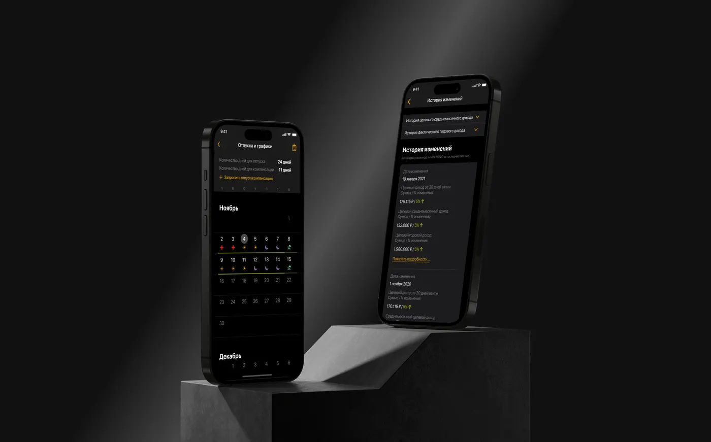
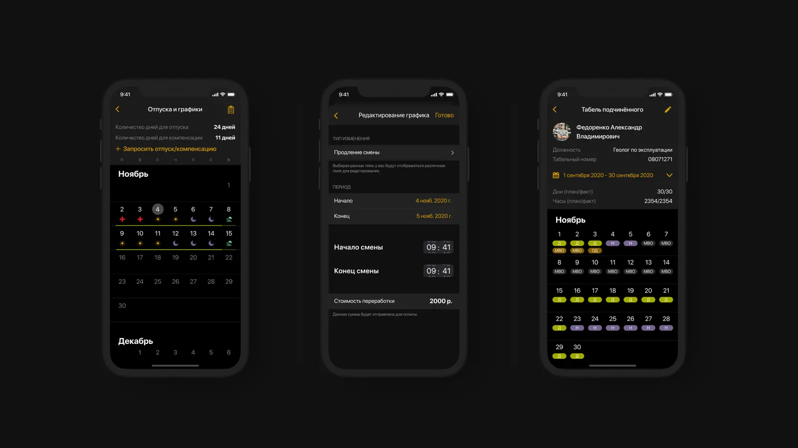
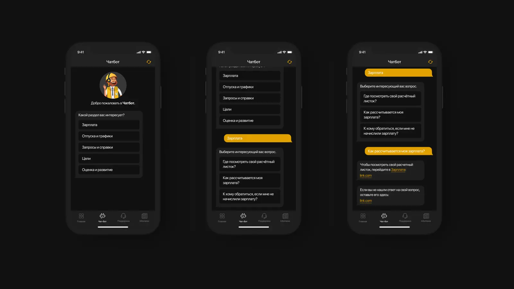
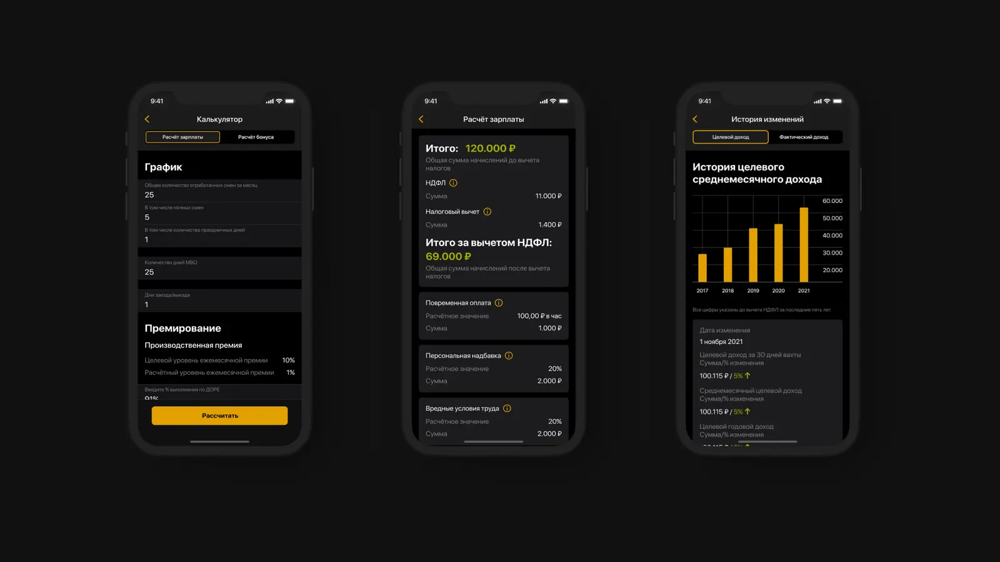

Менеджер данных · UX/UI
Employee Relations Manager
Мобильная и веб-платформа, которая даёт сотрудникам единое место для доступа к информации о компании, управления графиком и связи с коллегами.
- Роль
- UX/UI дизайнер
- Платформа
- Мобильные · веб
- Сфера
- HR · Enterprise

Обзор
Одно место для всего, что нужно сотрудникам
Мобильная и веб-платформа, которая даёт сотрудникам единое место для доступа к информации о компании, управления графиком и связи с коллегами.
Задача
Много стейкхолдеров и нет раннего доступа к пользователям
Большое число стейкхолдеров с разными приоритетами замедляло согласование, а прямого доступа к конечным пользователям на раннем этапе не было, что ограничивало проверку гипотез. При этом продукту нужно было несколько критически важных для бизнеса модулей.
- 01
Рабочие графики
- 02
Внутренний чат-бот
- 03
Расчёт зарплаты
- 04
Отчётность
Процесс
Меньше лиц, принимающих решения, быстрее итерации
Сначала низкодетальные прототипы отправлялись стейкхолдерам на обратную связь. Постепенное сокращение числа тех, кто принимает решения, ускорило итерации и сделало обсуждения точнее. Когда ключевые сценарии были проверены, я перешёл к визуальному дизайну и переиспользуемым компонентам.
Юзабилити-тестирования заранее не было, но первый релиз дал реальную обратную связь от сотрудников, которая повлияла на дальнейшие доработки и подтолкнула команду к процессу, больше ориентированному на пользователей.
01 — Рабочие графики
Часы под рукой у сотрудников, контроль у руководителей
Сотрудники мгновенно видят свои часы и ежедневный статус. Руководители получают больше: видят графики подчинённых и могут редактировать смены, часы и посещаемость прямо в системе.

02 — Чат-бот
Намеренно простой сценарий
Внутренний чат-бот упрощает доступ к информации о компании.
- 01
Выбрать интересующую тему
- 02
Выбрать готовый вопрос или категорию
- 03
Получить ответ или отправить новый вопрос

03 — Калькулятор зарплаты и отчёты
Доходы и бонусы — понятно
Отдельный модуль помогает сотрудникам разобраться в доходах и расчёте бонусов: ввести нужные данные, рассчитать ожидаемые выплаты, посмотреть бонусы и отследить изменения со временем.

Результат
Платформа объединила основные сервисы для сотрудников в одну экосистему: лучший доступ к информации, больше прозрачности и более простое повседневное взаимодействие сотрудников с компанией.
Что я спроектировал
Другие кейсы